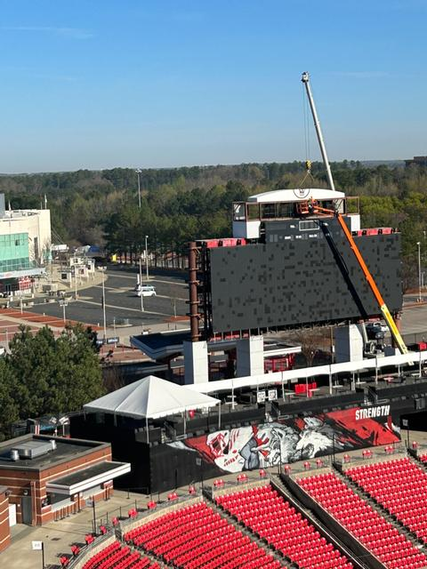
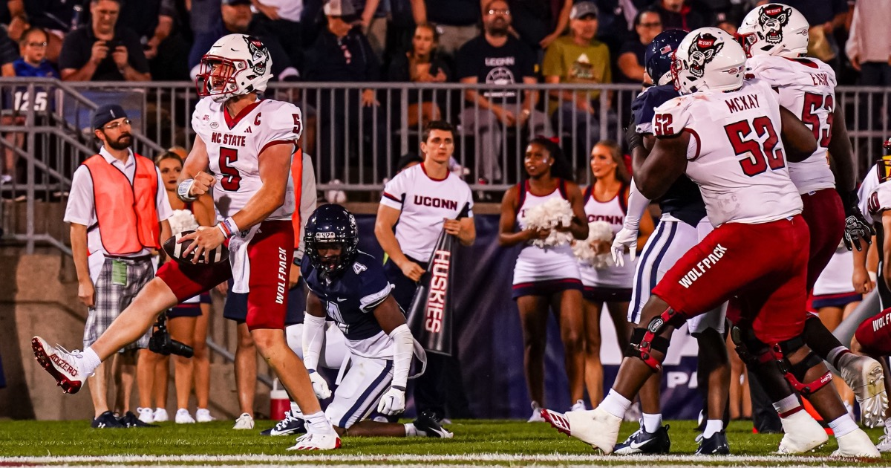

Carter-Finley to Feature New Scoreboard
Wolfpack fans can look forward to a new and improved scoreboard at home games for the 2023 season. This scoreboard will be featured on the North End Zone side of the stadium for the home opener against the Notre Dame Fighting Irish. This will feature the current Tuffy head logo on the backside of the scoreboard for the fans entering into the North gates of Carter-Finley Stadium. This comes after boosters saw issues with the quality of the previous scoreboard that had problems with deteriorating cells that made viewing the screens images tough. This will make the new scoreboard in Carter-Finley the largest in North Carolina and one of the largest in the nation. The state-of-the-art LED display boasts crystal-clear high-definition resolution, ensuring every play, replay, and statistic is visible even from the farthest corners of the stadium. Its immense size and vibrant colors add an electrifying atmosphere to every game, making it a focal point for fans to rally around. This is paired with the new light system, installed last off-season, will make for an amazing spectacle at the beginning of the fourth quarter. This scoreboard is not just an upgrade; it's a game-changer, enhancing the overall fan engagement and enjoyment of events at Carter-Finley Stadium.
Wolfpack Opens the Season with a W
